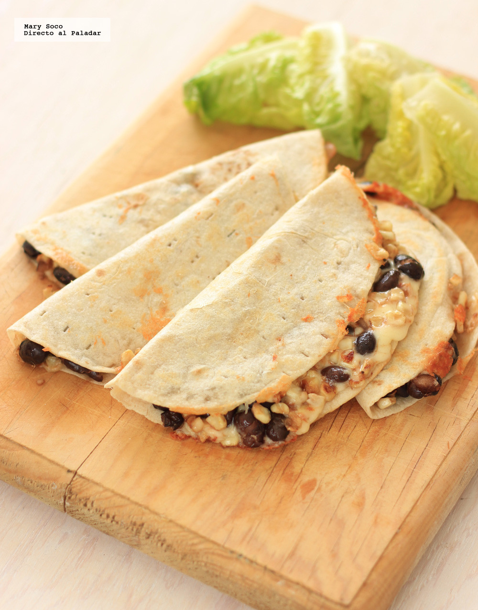

QUESADILLAS DE ELOTE Y FRIJOLES NEGROS
El maíz y el frijol son dos de los ingredientes base de nuestra alimentación. Mientras que los granos secos del maíz dan forma a las tortillas y a una gran cantidad de platillos como los sopes, las quesadillas, los huaraches, las chalupas y una larga lista de antojitos mexicanos, los granos tiernos a los que llamamos elote, son parte de diversos platillos que a todos gustan.
MEXICO
INGREDIENTES
Para 2 personas
- 1/2 taza de frijoles negros cocidos y sin caldo
- 2 elotes desgranado
- 2 cucharadas de salsa o adobo de chile chipotle
- 1 taza de queso manchego rallado
- 4 tortillas de harina
- Sal a gusto
- Pimienta a gusto
- Aceite el necesario
PREPARACION
Quesadillas de elote y frijoles negros
Nuestro primer paso será calentar en una sartén un poco de aceite y sofreír en este los granos de elote hasta que estén tiernos; podemos tapar el sartén unos minutos para acelerar este proceso. En seguida agregaremos los frijoles negros, la salsa de chile chipotle y sazonaremos con sal y pimienta.
En seguida, calentaremos otra sartén a fuego medio y añadiremos una cucharadita de aceite. Colocaremos una tortilla y en una mitad agregaremos una cuarta parte de la mezcla de frijoles y elote, para después espolvorear un cuarto de taza del queso manchego rallado. Doblaremos la tortilla y dejaremos que dore ligeramente por un lado para luego voltear y permitir que se dore del otro lado.
Podemos apoyarnos con la parte trasera de una espátula de cocina para lograr que el queso se funda de manera uniforme. Repetimos hasta acabar con las cuatro tortillas y servimos inmediatamente.